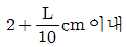
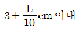
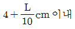
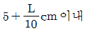
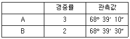
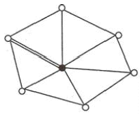
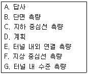
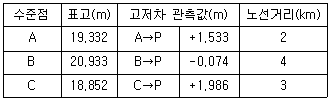
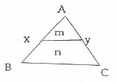
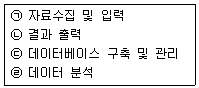

지적기사 (2017-08-26 기출문제)
1과목: 지적측량
1. 수평각의 관측 시 윤곽도를 달리하여 망원경을 정·반으로 관측하는 이유로 가장 적합한 것은?
- 각 관측의 편의를 위함이다.
- 과대오차를 제거하기 위함이다.
- 기계 눈금 오차를 제거하기 위함이다.
- 관측값의 계산을 용이하게 하기 위함이다.
(정답률: 89%)

2. 다각망도선법에 따라 지적도근점측량을 실시하는 경우 지적도근점표지의 평균 점간거리는?
- 50m 이하
- 200m 이하
- 300m 이하
- 500m 이하
(정답률: 76%)
3. 경위의측량방법으로 세부측량을 하였을 때, 측량 대상 토지의 경계점 간 실측거리와 경계점의 좌표에 따라 계산한 거리의 교차 기준으로 옳은 것은?(단, L은 실측거리로서 미터단 위로 표시한 수치이다.)




(정답률: 91%)
4. sin45°의 1초차를 소수점 이하 6위를 정수로 하여 표시한 것은?
- 0.34
- 2.42
- 3.43
- 4.45
(정답률: 56%)
5. 평판측량방법에 따른 세부측량을 도선법으로 하는 경우, 폐색오차가 도상 1mm이고 총 변수가 12 일 때 제7변에 배부할 도상거리는?
- 0.2mm
- 0.4mm
- 0.6mm
- 0.8mm
(정답률: 72%)
6. 지상 1km2의 면적을 도상 4cm2로 표시한 도면의 축척은?
- 1/2500
- 1/5000
- 1/25000
- 1/50000
(정답률: 64%)
7. 경중률이 서로 다른 데오도라이트 A, B를 사용하여 동일한 측점의 협각을 관측한 결과가 다음과 같을 때 최확값은?

- 68°39′15″
- 68°39′18″
- 68°39′20″
- 68°39′22″
(정답률: 67%)
8. 다각망도선법에 의한 지적도근점측량을 할 때 1도선의 점의 수는 몇 점 이하로 제한되는 가?
- 10점
- 20점
- 30점
- 40점
(정답률: 74%)
9. 도선법에 따른 지적도근점의 각도관측을 배각법으로 하는 경우, 1도선의 폐색오차의 허용 범위는?(단, 폐색변을 포함한 변의 수는 20개이며 2등 도선이다.)
- ±44초 이내
- ±67초 이내
- ±89초 이내
- ±134초 이내
(정답률: 54%)
10. 지적삼각보조점측량을 다각망도선법으로 실시 할 경우 1도선에 최대로 들어갈 수 있는 점의 수는?
- 2점
- 3점
- 4점
- 5점
(정답률: 68%)
11. 표준장 100m에 대하여 테이프(Tape)의 길이가 100m인 강제권척을 검사한 결과 +0.⑤2m 이었을 때, 이 테이프(Tape)의 보정계수는?
- 1.00⑤2
- 1.99948
- 0.00⑤2
- 0.99948
(정답률: 73%)
12. 다음 중 색인도 등의 제도에 관한 설명으로 옳지 않은 것은?
- 도면번호는 3mm의 크기로 제도한다.
- 도곽선 왼쪽 윗부분 여백의 중앙에 제도한다.
- 축척은 도곽선 윗부분 여백의 좌측에 3mm의 글자 크기로 제도한다.
- 가로 7mm, 세로 6mm 크기의 직사각형을 중앙에 두고 그의 4변에 접하여 같은 규격으로 4개의 직사각형을 제도한다.
(정답률: 53%)
13. 지적삼각보조점측량을 다각망도선법으로 시행 할 경우 1도선의 거리의 기준은?
- 1km 이하
- 2km 이하
- 3km 이하
- 4km 이하
(정답률: 79%)
14. 평판측량방법으로 임야도를 갖춰 두는 지역에서 세부측량을 실시할 경우의 거리측정단위는?
- 5cm
- 10cm
- 50cm
- 100cm
(정답률: 81%)
15. 광파기측량방법으로 지적삼각점을 관측할 경우 기계의 표준편차는 얼마 이상이어야 하는가?
- ±(5mm+5ppm)이상
- ±(3mm+5ppm)이상
- ±(5mm+10ppm)이상
- ±(3mm+10ppm)이상
(정답률: 89%)
16. 아래 유심다각망에서 형태 규약의 개수는?

- 5개
- 6개
- 7개
- 8개
(정답률: 53%)
17. 지적삼각점측량의 관측 및 계산에 대한 설명으로 옳은 것은?
- 1방향각의 측각 공차는 ±50초 이내이다.
- 기지각과의 측각 공차는 ±40초 이내이다.
- 연직각을 관측할 때에는 정반 1회 관측한다.
- 수평각 관측은 3배각의 배각관측법에 의한다.
(정답률: 77%)
18. UTM좌표계에 대한 설명으로 옳은 것은?
- 종선좌표의 원점은 위도 38°선이다.
- 중앙자오선에서 멀수록 축척계수는 작아진다.
- UTM투영은 적도선을 따라 6°간격으로 이루어진다.
- 우리나라는 UTM좌표를 53, 54 종대에 속해있다.
(정답률: 60%)
19. 경계점좌표등록부 시행지역에서 경계점의 지적측량성과와 검사성과의 연결교차 허용범위 기준으로 옳은 것은?
- 0.10m이내
- 0.15m이내
- 0.20m이내
- 0.25m이내
(정답률: 60%)
20. 지적기준점측량의 절차가 올바르게 나열된 것은?
- 계획의 수립 → 준비 및 현지답사 → 선점 및 조표 → 관측 및 계산과 성과표의 작성
- 준비 및 현지답사 → 선점 및 조표 → 계획의 수립 → 관측 및 계산과 성과표의 작성
- 계획의 수립 → 선점 및 조표 → 준비 및 현지답사 → 관측 및 계산과 성과표의 작성
- 준비 및 현지답사 → 계획의 수립 → 선점 및 조표 → 관측 및 계산과 성과표의 작성
(정답률: 85%)
2과목: 응용측량
21. 터널에서 수준측량을 실시한 결과가 표와 같을 때 측점 N0.3의 지반고는? (단, (-)는 천장에 설치된 측점이다.)
- 36.80m
- 41.21m
- 48.94m
- 49.35m
(정답률: 71%)
22. 지형측량에 관한 설명으로 틀린 것은?
- 축척 1:50000, 1:25000, 1:5000 지형도의 주곡선 간격은 각각 20m, 10m, 2m 이다.
- 지성선은 지형을 묘사하기 위한 중요한 선으로 능선, 최대경사선, 계곡선 등이 있다.
- 지형의 표시방법에는 우모법, 음영법, 채색법, 등고선법 등이 있다.
- 등고선 중 간곡선 간격은 조곡선 간격의 2배 이다.
(정답률: 71%)
23. 상호표정에 대한 설명으로 틀린 것은?
- 종시차는 상호표정에서 소거되지 않는다.
- 상호표정 후에도 횡시차는 남는다.
- 상호표정으로 형성된 모델은 지상모델과 상사관계이다.
- 상호표정에서 5개의 표정인자를 결정한다.
(정답률: 57%)
24. 수준기의 감도가 4″인 레벨로 60m 전방에 세운 표척을 시준한 후 기포가 1눈금 이동 하였을 때 발생하는 오차는?
- 0.6mm
- 1.2mm
- 1.8mm
- 2.4mm
(정답률: 59%)
25. 터널 측량의 일반적인 순서로 옳은 것은?

- A → D → B → C → F → E → G
- D → A → F → C → E → G → B
- A → D → C → F → E → G → B
- D → A → C → F → G → B → E
(정답률: 63%)
26. 등고선에 대한 설명으로 틀린 것은?
- 높이가 다른 두 등고선은 어떠한 경우도 서로 교차하지 않는다.
- 동일 등고선 상에 있는 모든 점은 같은 높이이다.
- 등고선은 도면 내외에서 폐합하는 폐곡선이다.
- 지도의 도면 내에서 폐합하는 경우 등고선의 내부에 산꼭대기 또는 분지가 있다.
(정답률: 80%)
27. 수십MHz~수GHz 주파수 대역의 전자기파를 이용하여 전자기파의 반사와 회절 현상 등을 측정하고 이를 해석하여 지하구조의 파악 및 지하시설물을 측량하는 방법은?
- 지표 투과 레이더(GPR) 탐사법
- 초장기선 전파간섭계법
- 전자유도 탐사법
- 자기 탐사법
(정답률: 52%)
28. 수준점 A, B, C에서 수준측량을 한 결과가 표와 같을 때 P점의 최확값은?

- 20.839m
- 20.842m
- 20.855m
- 20.869m
(정답률: 66%)
29. 클로소이드 곡선설치의 평면선형에 대한 설명으로 옳은 것은?
- 기본형은 직선-클로소이드-직선으로 연결한 선형이다.
- S형은 반향곡선 사이에 두개의 클로소이드를 연결한 선형이다.
- 블록(凸)형은 복심곡선 사이에 클로소이드를 삽입한 것이다.
- 복합형은 같은 방향으로 구부러진 2개의 클로소이드를 직선적으로 삽입한 것이다.
(정답률: 70%)
30. 그림과 같이 C와 평행한 y로 면적을 m:n=1:4의 비율로 분할하고자 한다. AB=75m일 때 Ax의 거리는?

- 15.0m
- 18.8m
- 33.5m
- 37.5m
(정답률: 60%)
31. 사진축척 1:20000, 초점거리 15cm, 사진크기 23cm×23cm로 촬영한 연직 사진에서 주점으로부터 100mm 떨어진 위치에 철탑의 정상부가 찍혀 있다. 이 철탑이 사진 상에서 길이가 5mm 이었다면 철탑의 실제 높이는?
- 50m
- 100m
- 150m
- 200m
(정답률: 61%)
32. GNSS 측량방법 중 후처리방식이 아닌 것은?
- Static방법
- Kinematic방법
- Pseudo-Kinematic방법
- Real-Time Kinematic방법
(정답률: 66%)
33. 곡률반지름이 현의 길이에 반비례하는 곡선으로 시가지 철도 및 지하철 등에 주로 사용되는 완화곡선은?
- 렘니스케이트
- 반파장 체감곡선
- 클로소이드
- 3차포물선
(정답률: 55%)
34. 사진판독에 대한 설명으로 옳지 않은 것은?
- 사진판독 요소는 색조, 형태, 질감, 크기, 형상, 음영 등이 있다.
- 사진의 판독에는 보통 흑백 사진보다 천연색 사진이 유리하다.
- 사진판독에서 얻을 수 있는 자료는 사진의 질과 사진판독의 기술, 전문적 지식 및 경험 등에 좌우된다.
- 사진판독의 작업은 촬영계획, 촬영과 사진작성, 정리, 판독, 판독기준의 작성 순서로 진행된다.
(정답률: 68%)
35. GNSS 위치결정에서 정확도와 관련된 위성의 위치 상태에 관한 내용으로 옳지 않은 것은?
- 결정좌표의 정확도는 정밀도 저하율(DOP)과 단위관측정확도의 곱에 의해 결정된다.
- 3차원 위치는 TDOP(Time DOP)에 의해 정확도가 달라진다.
- 최적의 위성배치는 한 위성은 관측자의 머리 위에 있고 다른 위성의 배치가 각각 120°를 이룰 때이다.
- 높은 DOP는 위성의 배치 상태가 나쁘다는 것을 의미한다.
(정답률: 61%)
36. 수준측량과 관련된 용어에 대한 설명으로 틀린 것은?
- 후시는 기지점에 세운 표척의 읽음값이다.
- 전시는 미지점 표척의 읽음값이다.
- 중간점은 오차가 발생해도 다른 지점에 영향이 없다.
- 이기점은 전시와 후시값이 항상 같게 된다.
(정답률: 47%)
37. 등고선 측량방법 중 표고를 알고 있는 기지점에서 중요한 지성선을 따라 측선을 설치하고, 측선을 따라 여러 점의 표고와 거리를 측량하여 등고선을 측량하는 방법은?
- 방안법
- 횡단점법
- 영선법
- 종단점법
(정답률: 65%)
38. GNSS 측량에서 위도, 경도, 고도, 시간에 대한 차분해(differential solution)를 얻기 위해서는 최소 몇 개의 위성이 필요한가?
- 2
- 4
- 6
- 8
(정답률: 79%)
39. 단곡선에서 반지름 R=300m, 교각 I=60°일 때, 곡선 길이(C.L.)는?
- 310.10m
- 315.44m
- 314.16m
- 311.55m
(정답률: 66%)
40. 단곡선 설치에서 두 접선의 교각이 60°이고, 외선 길이(E)가 14m인 단곡선의 반지름은?
- 24.2m
- 60.4m
- 90.5m
- 104.5m
(정답률: 52%)
3과목: 토지정보체계론
41. 지적전산정보시스템에서 사용자권한 등록파일에 등록하는 사용자의 권한에 해당하지 않는 것은?
- 표준지 공시지가 변동의 관리
- 지적전산코드의 입력·수정 및 삭제
- 지적공부의 열람 및 등본 발급의 관리
- 법인이 아닌 사단·재단 등록번호의 직권수정
(정답률: 54%)
42. 시·군·구(자치구가 아닌 구 포함) 단위의 지적 공부에 관한 지적전산자료의 이용 및 활용에 관한 승인권자로 옳은 것은?
- 지적소관청
- 시·도지사 또는 지적소관청
- 국토교통부장관 또는 시·도지사
- 국토교통부장관, 시·도지사 또는 지적소관청
(정답률: 47%)
43. 다음 중 토지정보시스템의 구성요소에 해당하지 않는 것은?
- 인적자원
- 처리시간
- 소프트웨어
- 공간데이터베이스
(정답률: 81%)
44. 해상력에 대한 설명으로 옳지 않은 것은?
- 해상력은 일반적으로 mm당 선의 수를 말한다.
- 해상력은 자료를 표현하는 최대단위를 의미한다.
- 수치영상시스템에서의 공간해상력은 격자나 픽셀의 크기를 의미한다.
- 일반적으로 항공사진이나 인공위성 영상의 경우에 해상력은 식별이 가능한 최소 객체를 의미한다.
(정답률: 62%)
45. 다음 중 속성정보로 보기 어려운 것은?
- 임야도의 등록사항인 경계
- 경계점좌표등록부의 등록사항인 지번
- 대지권등록부의 등록사항인 대지권 비율
- 공유지연명부의 등록사항인 토지의 소재
(정답률: 74%)
46. GIS의 구축 및 활용을 위한 과정을 순서대로 올바르게 나열한 것은?

- ㉠-㉢-㉣-㉡
- ㉣-㉠-㉢-㉡
- ㉡-㉠-㉣-㉢
- ㉣-㉡-㉠-㉢
(정답률: 75%)
47. 토지정보체계(LIS)와 지리정보체계(GIS)의 차이점으로 옳지 않은 것은?
- 지리정보체계의 공간기본단위는 지역과 구역이다.
- 토지정보체계는 일반적으로 대축척 지적도를 기본도로 한다.
- 토지정보체계의 공간기본단위는 필지(parcel)이다.
- 지리정보체계는 일반적으로 소축척 행정구역도를 기본도로 한다.
(정답률: 68%)
48. 공간자료의 표현 형태 중 점(point)에 대한 설명으로 옳은 것은?
- 공간객체 중 가장 복잡한 형태를 가진다.
- 최소한의 데이터 요소로 위치와 속성을 가진다.
- 공간분석에 있어서 가장 많은 양의 데이터를 요구한다.
- 좌표계 없이 위치를 나타내며 관련 속성데이터가 연결된다.
(정답률: 80%)
49. 관계형 데이터베이스모델(relational database model)의 기본 구조 요소로 옳지 않은 것은?
- 속성(attribute)
- 행(record)
- 테이블(table)
- 소트(sort)
(정답률: 68%)
50. 토지소유자나 이해관계인이 지적재조사사업과 관련한 정보를 인터넷 등을 통하여 실시간으로 열람할 수 있도록 구축한 공개시스템의 명칭은?
- 지적재조사측량시스템
- 지적재조사행정시스템
- 지적재조사관리공개시스템
- 지적재조사정보공개시스템
(정답률: 46%)
51. 데이터베이스의 스키마를 정의하거나 수정하는데 사용하는 데이터 언어는?
- DBL
- DCL
- DML
- DDL
(정답률: 66%)
52. 토지의 고유번호의 총 자리 수는?
- 20자리
- 19자리
- 18자리
- 17자리
(정답률: 79%)
53. 다음 중 유럽의 지형공간 데이터의 표준화 작업을 위한 지리 정보 표준화 기구로 옳은 것은?
- OGC
- FGDC
- CEN/TC287
- ISO/TC211
(정답률: 53%)
54. 필지중심 토지정보시스템에서 도형정보와 속성정보를 연계하기 위하여 사용되는 가변성이 없는 고유번호는?
- 객체식별번호
- 단일식별번호
- 유일식별번호
- 필지식별번호
(정답률: 78%)
55. 데이터에 대한 정보로서 데이터의 내용, 품질, 조건 및 기타 특성에 대한 정보를 포함하는 정보의 이력서라 할 수 있는 것은?
- 인덱스(Index)
- 라이브러리(Library)
- 메타데이터(Metadata)
- 데이터베이스(Database)
(정답률: 80%)
56. 다음 중 국가공간정보위원회와 관련된 내용으로 옳은 것은?
- 위원회는 회의의 원활한 진행을 위하여 간사 1명을 둔다.
- 위원장은 회의 개최 7일 전까지 회의 일시·장소 및 심의안건을 각 위원에게 통보하여야 한다.
- 회의는 재적위원 3분의 1의 출석으로 개의하고, 출석위원 3분의 2의 찬성으로 의결한다.
- 위원장이 부득이한 사유로 직무를 수행할 수 없을 때에는 위원장이 지명하는 위원의 순으로 그 직무를 대행한다.
(정답률: 44%)
57. 다음 중 TIGER파일의 도형자료를 수치지도 데이터베이스로 구축한 국가는?
- 한국
- 호주
- 미국
- 캐나다
(정답률: 64%)
58. 공간데이터를 취득하는 방법이 서로 다른 것은?
- GPS
- 원격탐측
- 디지타이징
- 토탈스테이션
(정답률: 70%)
59. 지적정보관리체계로 처리하는 지적공부정리 등의 사용자권한 등록파일을 등록할 때의 사용자 비밀번호 설정 기준으로 옳은 것은?
- 4자리부터 12자리까지의 범위에서 사용자가 정하여 사용한다.
- 6자리부터 16자리까지의 범위에서 사용자가 정하여 사용한다.
- 영문을 포함하여 3자리부터 12자리까지의 범위에서 사용자가 정하여 사용한다.
- 영문을 포함하여 5자리부터 16자리까지의 범위에서 사용자가 정하여 사용한다.
(정답률: 74%)
60. 스캐닝 방식을 이용하여 지적전산 파일을 생성할 경우, 선명한 영상을 얻기 위한 방법으로 옳지 않은 것은?
- 해상도를 최대한 낮게 한다.
- 원본 형상의 보존 상태를 양호하게 한다.
- 하프톤 방식의 스캐닝 시에는 되도록 속도를 느리게 한다.
- 크기가 큰 영상은 영역을 세분하여 차례로 스캐닝 한다.
(정답률: 81%)
4과목: 지적학
61. 토지등록공부의 편성방법이 아닌 것은?
- 물적 편성주의
- 인적 편성주의
- 세대별 편성주의
- 연대적 편성주의
(정답률: 85%)
62. 고구려에서 토지 면적단위체계로 사용된 것은?
- 경무법
- 두락법
- 결부법
- 수등이척법
(정답률: 73%)
63. 토지소유권 권리의 특성이 아닌 것은?
- 탄력성
- 혼일성
- 항구성
- 불완전성
(정답률: 76%)
64. 토지의 권리 표상에 치중한 부동산 등기와 같은 형식적 심사를 가능하게 한 지적제도의 특성으로 볼 수 없는 것은?
- 지적공부의 공시
- 지적측량의 대행
- 토지 표시의 실질 심사
- 최초 소유자의 사정 및 사실조사
(정답률: 56%)
65. 토지경계에 대한 설명으로 옳지 않은 것은?
- 지역선이란 사정선과 같다.
- 강계선이란 사정선을 말한다.
- 원칙적으로 지적(임야)도 상의 경계를 말한다.
- 지적공부상에 등록하는 단위토지인 일필지의 구획선을 말한다.
(정답률: 74%)
66. 경계 복원 측량의 법률적 효력 중 소관청 자신이나 토지소유자 및 이해관계인에게 정당한 변경 절차가 없는 한 유효한 행정처분에 복종하도록 하는 것은?
- 구속력
- 공정력
- 강제력
- 확정력
(정답률: 55%)
67. 토지조사사업 당시 사정(査定)의 처분 행위는?
- 행정처분
- 사법행위
- 등기공시
- 재결행위
(정답률: 70%)
68. 토지조사사업 당시 재결기관으로 옳은 것은?
- 부와 면
- 임시토지조사국
- 임야심사위원회
- 고등토지조사위원회
(정답률: 82%)
69. 대만에서 지적 재조사를 의미하는 것은?(오류 신고가 접수된 문제입니다. 반드시 정답과 해설을 확인하시기 바랍니다.)
- 국토조사
- 지적도 중측
- 지도작제
- 토지가옥조사
(정답률: 63%)
70. 다음 중 지적제도의 기능이 아닌 것은?
- 지방행정의 자료
- 토지유통의 매개체
- 토지감정평가의 기초
- 토지이용 및 개발의 기준
(정답률: 27%)
71. 토지조사부(土地調査簿)에 대한 설명으로 옳은 것은?
- 결수연명부로 사용된 장부이다.
- 입안과 양안을 통합한 장부이다.
- 별책토지대장으로 사용된 장부이다.
- 토지소유권의 사정원부로 사용된 장부이다.
(정답률: 54%)
72. 다음 중 권원등록제도(registration of title)에 대한 설명으로 옳은 것은?
- 토지의 이익에 영향을 미치는 문서의 공적 등기를 보전하는 제도이다.
- 보험회사의 토지중개 거래제도이다.
- 소유권 등록 이후에 이루어지는 거래의 유효성에 대하여 정부가 책임을 지는 제도이다.
- 토지소유권의 공시보호제도이다.
(정답률: 60%)
73. 경국대전에 의한 공전(公田), 사전(私田)의 구분 중 사전(私田)에 속하는 것은?
- 적전(籍田)
- 직전(職田)
- 관둔전(官屯田)
- 목장토(牧場土)
(정답률: 54%)
74. 고조선 시대의 토지 관리를 담당한 직책은?(오류 신고가 접수된 문제입니다. 반드시 정답과 해설을 확인하시기 바랍니다.)
- 봉가(鳳加)
- 주부(主簿)
- 박사(博士)
- 급전도감(給田都監)
(정답률: 52%)
75. 지적의 발생설을 토지측량과 밀접하게 관련지어 이해할 수 있는 이론은?
- 과세설
- 치수설
- 지배설
- 역사설
(정답률: 76%)
76. 다음 중 우리나라에서 최초로 '지적'이라는 용어가 사용된 곳은?
- 경국대전
- 내부관제
- 임야조사령
- 토지조사법
(정답률: 65%)
77. 지목을 설정할 때 심사의 근거가 되는 것은?
- 지질구조
- 토양 유형
- 입체적 토지이용
- 지표의 토지이용
(정답률: 75%)
78. 우리나라 지적제도에 토지대장과 임야대장이 2원적(二元的)으로 있게 된 가장 큰 이유는?
- 측량기술이 보급되지 않았기 때문이다.
- 삼각측량에 시일이 너무 많이 소요되었기 때문이다.
- 토지나 임야의 소유권 제도가 확립되지 않았기 때문이다.
- 우리의 지적제도가 조사사업별 구분에 의하여 다르게 하였기 때문이다.
(정답률: 74%)
79. 우리나라 토지조사사업의 시행목적으로 옳지 않은 것은?
- 토지의 가격조사
- 토지의 소유권조사
- 토지의 지질조사
- 토지의 외모조사
(정답률: 63%)
80. 입안제도(立案制度)에 대한 설명으로 옳지 않은 것은?
- 입안은 매수인의 소재관에게 제출하였다.
- 토지매매 후 100일 이내에 하는 명의변경 절차이다.
- 입안 받지 못한 문기는 효력을 인정받지 못하였다.
- 조선시대에 토지거래를 관에 신고하고 증명을 받는 것이다.
(정답률: 54%)
5과목: 지적관계법규
81. 공간정보의 구축 및 관리 등에 관한 법령상 지적공부의 복구 및 복구절차 등에 관한 내용으로 옳지 않은 것은?
- 소유자에 관한 사항은 부동산등기부나 법원의 확정판결에 따라 복구하여야만 한다.
- 지적소관청은 지적공부의 전부 또는 일부가 멸실되거나 훼손된 경우에는 지체 없이 이를 복구하여야 한다.
- 지적공부를 복구할 때에는 멸실·훼손 당시의 지적공부와 가장 부합된다고 인정되는 관계 자료에 따라 토지의 표시에 관한 사항을 복구하여야 한다.
- 지적소관청은 지적공부를 복구하려는 경우에는 복구하려는 토지의 표시 등을 시·군·구 게시판 및 인터넷 홈페이지에 7일 이상 게시하여야 한다.
(정답률: 67%)
82. 다음 중 국토의 계획 및 이용에 관한 법령상 원칙적으로 공동구를 관리하여야 하는 자는?
- 구청장
- 특별시장
- 국토교통부장관
- 행정안전부장관
(정답률: 52%)
83. 지적공부에 등록하기 위한 지목결정으로 옳지 않은 것은?
- 소관청에서 결정한다.
- 1필지에 1지목을 설정한다.
- 토지의 주된 용도에 따라 결정한다.
- 토지소유자가 신청하는 지목으로 설정한다.
(정답률: 81%)
84. 지적소관청이 측량기준점의 설치를 위해 토지 등의 출입 등에 따라 손실이 발생하여, 손실을 받은 자와 협의가 성립되지 아니한 경우 재결을 신청할 수 있는 곳은?
- 시·도지사
- 중앙지적위원회
- 행정안전부장관
- 관할 토지수용위원회
(정답률: 77%)
85. 공간정보의 구축 및 관리 등에 관한 법령상 토지대장과 임야대장에 등록하여야 하는 사항으로 옳지 않은 것은?
- 지번
- 면적
- 좌표
- 토지의 소재
(정답률: 68%)
86. 다음 중 2년 이하의 징역 또는 2천만원 이하의 벌금에 처하는 벌칙 기준을 적용받는 경우는?
- 정당한 사유 없이 측량을 방해한 자
- 측량기술자가 아님에도 불구하고 측량을 한 자
- 측량업의 등록을 하지 아니 하고 측량업을 한 자
- 측량업자로서 속임수로 측량업과 관련된 입찰의 공정성을 해친 자
(정답률: 55%)
87. 다음 중 공간정보의 구축 및 관리 등에 관한 법률에서 규정하고 있는 내용이 아닌 것은?
- 토지공개념의 확보
- 측량 및 수로조사의 기준 및 절차 규정
- 지적공부의 작성 및 관리에 관한 사항 규정
- 부동산종합공부의 작성 및 관리에 관한 사항 규정
(정답률: 45%)
88. 부동산등기법령상 등기부에 관한 설명으로 옳지 않은 것은?
- 등기부는 영구히 보존하여야 한다.
- 공동인명부와 도면은 영구히 보존하여야 한다.
- 등기부는 토지등기부와 건물등기부로 구분 한다.
- 등기부란 전산정보처리조직에 의하여 입력·처리된 등기정보자료를 대법원규칙으로 정하는 바에 따라 편성한 것을 말한다.
(정답률: 58%)
89. 공간정보의 구축 및 관리 등에 관한 법령상 잡종지로 지목을 설정 할 수 없는 것은?
- 야외시장
- 돌을 캐내는 곳
- 영구적 건축물인 자동차운전학원의 부지
- 원상회복을 조건으로 흙을 파내는 곳으로 허가된 토지
(정답률: 67%)
90. 공간정보의 구축 및 관리 등에 관한 법령상 등기촉탁에 대한 설명으로 옳지 않은 것은?
- 신규등록은 등기촉탁 대상에서 제외한다.
- 토지의 경계, 소유자 등을 변경 정리한 경우에 토지소유자를 대신하여 소관청이 관할 등 기관서에 등기 신청을 하는 것을 말한다.
- 지적소관청이 관련 법규에 따른 사유로 등기를 촉탁하는 경우, 국가가 국가를 위하여 하는 등기로 본다.
- 축척변경의 사유로 등기촉탁을 하는 경우에 이해관계가 있는 제3자의 승낙은 관할 축척변경위원회의 의결서 정본으로 갈음할 수 있다.
(정답률: 36%)
91. 공간정보의 구축 및 관리 등에 관한 법령상 토지의 표시사항에 해당되지 않는 것은?
- 경계
- 면적
- 지번
- 소유자의 주소
(정답률: 79%)
92. 공간정보의 구축 및 관리 등에 관한 법령상 지적소관청은 지번을 변경하고자 할 때 누구에게 승인신청서를 제출하여야 하는가?
- 행정안전부장관
- 중앙지적위원회 위원장
- 토지수용위원회 위원장
- 시·도지사 또는 대도시 시장
(정답률: 76%)
93. 공간정보의 구축 및 관리 등에 관한 법령상 임야대장에 등록하는 1필지 최소면적 단위는? (단, 지적도의 축척이 600분의 1인 지역과 경계점좌표등록부에 등록하는 지역의 토지 면적은 제외한다.)
- 0.1제곱미터
- 1제곱미터
- 10제곱미터
- 100제곱미터
(정답률: 57%)
94. 지적측량수행자가 과실로 지적측량을 부실하게 하여 지적측량의뢰인에게 재산상의 손해를 발생하게 한 경우, 지적측량의뢰인이 손해배상으로 보험금을 지급받기 위해 보험회사에 첨부하여 제출하는 서류가 아닌 것은?
- 지적측량의뢰인과 지적측량수행자 간의 손해배상합의서
- 지적측량의뢰인과 지적측량수행자 간의 화해조서
- 지적위원회에서 손해 사실에 대하여 결정한 서류
- 확정된 법원의 판결문 사본 또는 이에 준하는 효력이 있는 서류
(정답률: 47%)
95. 부동산등기 법령상 등기기록의 갑구(甲區)에 기록하여야 할 사항은?
- 부동산의 소재지
- 소유권에 관한 사항
- 소유권 이외의 권리에 관한 사항
- 토지의 지목, 지번, 면적에 관한 사항
(정답률: 53%)
96. 공간정보의 구축 및 관리 등에 관한 법령상 지적정보관리시스템 사용자의 권한구분으로 옳지 않은 것은?
- 지적측량업 등록
- 토지이동의 정리
- 사용자의 신규등록
- 사용자 등록의 변경 및 삭제
(정답률: 51%)
97. 공간정보의 구축 및 관리 등에 관한 법령상 지적소관청이 토지소유자에게 지적정리 등을 통지하여야 하는 시기로 옳은 것은?
- 토지의 표시에 관한 변경등기가 필요한 경우: 그 등기완료의 통지서를 접수한 날부터 15일 이내
- 토지의 표시에 관한 변경등기가 필요한 경우: 그 등기완료의 통지서를 접수한 날부터 30일 이내
- 토지의 표시에 관한 변경등기가 필요하지 아니한 경우: 지적공부에 등록한 날부터 15일이내
- 토지의 표시에 관한 변경등기가 필요하지 아니한 경우: 지적공부에 등록한 날부터 30일 이내
(정답률: 38%)
98. 국토의 계획 및 이용에 관한 법령상 광역도시계획에 관한 설명으로 옳지 않은 것은?
- 광역계획권의 지정은 국토교통부장관만이 할 수 있다.
- 광역도시계획에는 경관계획에 관한 사항이 포함되어야 한다.
- 국토교통부장관은 시·도지사가 요청하는 경우 관할 시·도지사와 공동으로 광역도시계획을 수립할 수 있다.
- 인접한 둘 이상의 특별시·광역시·특별자치시·특별자치도·시 또는 군의 관할 구역 전부 또는 일부를 광역계획권으로 지정할 수 있다.
(정답률: 68%)
99. 축척변경에 따른 청산금을 산출한 결과, 증가된 면적에 대한 청산금의 합계와 감소된 면적에 대한 청산금의 합계에 차액이 생긴 경우 부족액의 부담권자는?
- 국토교통부
- 토지소유자
- 지방자치단체
- 한국국토정보공사
(정답률: 82%)
100. 부동산등기법령상 토지가 멸실된 경우, 그 토지 소유권의 등기명의인이 등기를 신청하여야 하는 기간은?
- 그 사실이 있는 때부터 14일 이내
- 그 사실이 있는 때부터 15일 이내
- 그 사실이 있는 때부터 1개월 이내
- 그 사실이 있는 때부터 3개월 이내
(정답률: 50%)